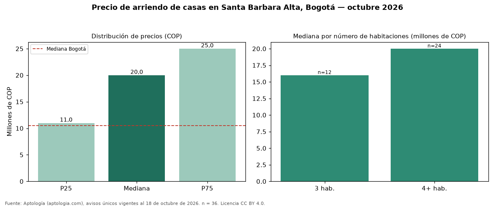

Precio de arriendo de casas en Santa Barbara Alta, Bogotá — octubre 2026
COP 20 millones al mes es el canon mediano de casas en arriendo en Santa Barbara Alta, Bogotá (n = 36 avisos únicos). Eso la ubica 90 % por encima de la mediana de Bogotá para casas (COP 10.500.000). Por metro cuadrado, la mediana es COP 42.901/m² (+40 % frente a COP 30.556/m² en Bogotá), puesto 3 de 18 barrios con muestra suficiente. Cruzando con la oferta de venta del mismo barrio, la rentabilidad bruta implícita es de 5,8 % anual (canon por m² × 12 / precio por m²). El área mediana anunciada es 412 m² (en Bogotá: 345 m²). La dispersión es alta: el cuartil superior (COP 25 millones) es 2,3 veces el inferior (COP 11 millones). El segmento con más oferta es el de 4 o más habitaciones (24 avisos, mediana COP 20 millones); pasar de 3 habitaciones a 4 o más habitaciones sube la mediana 25 %. Datos abiertos CC BY 4.0 de Aptología; fuente y búsqueda de inmuebles: https://www.aptologia.com/casas-en-arriendo/bogota/santa-barbara-alta. Archivos: PDF de 2 páginas, CSV con las cifras y gráfica PNG.

| Avisos únicos | 36 |
|---|---|
| Percentil 25 | COP 11.000.000 |
| Mediana | COP 20.000.000 |
| Percentil 75 | COP 25.000.000 |
| Mediana por m² | COP 42.900 |
Fuente: avisos vigentes de portales inmobiliarios recopilados por Aptología, deduplicados (mínimo 30 avisos únicos por celda). Precios pedidos, no cerrados. Fecha: 2026-10-18.